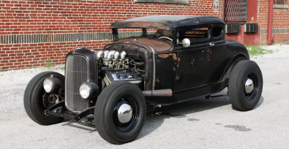
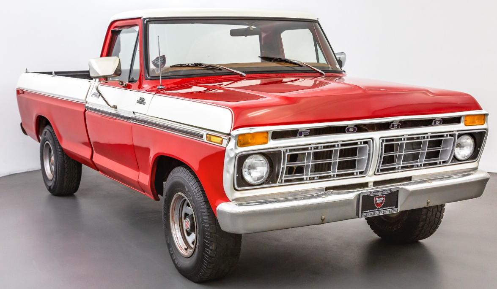
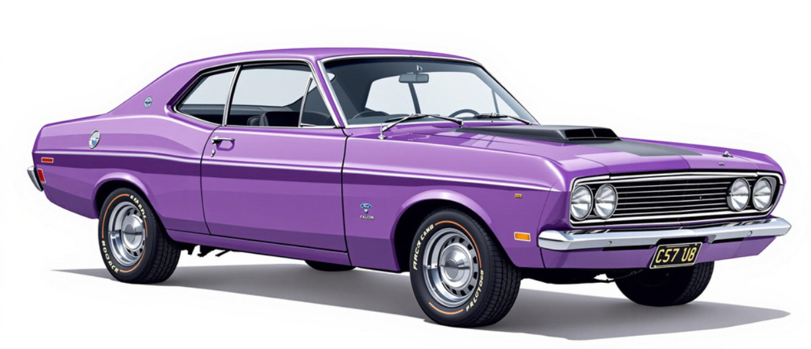

1908 — 1927
Ford Model T
The car that brought affordable motoring to millions.
Explore the designs, engineering milestones and unforgettable personalities that shaped the Ford story.
Search by model name and explore the collection at your own pace.
The car that brought affordable motoring to millions.

A new generation of styling, comfort and engineering.

The flathead V8 made eight-cylinder power more accessible.

A memorable expression of pre-war American automotive design.

Personal luxury and distinctive American grand-touring style.

A landmark name in the long-running F-Series pickup story.

An enduring performance icon with unmistakable proportions.

A racing legend celebrated for its Le Mans success.

A rugged off-road name built around exploration.

A practical compact whose platform helped shape the Mustang.

A subcompact that reflected the priorities of the 1970s.
No models match that search. Try another name.